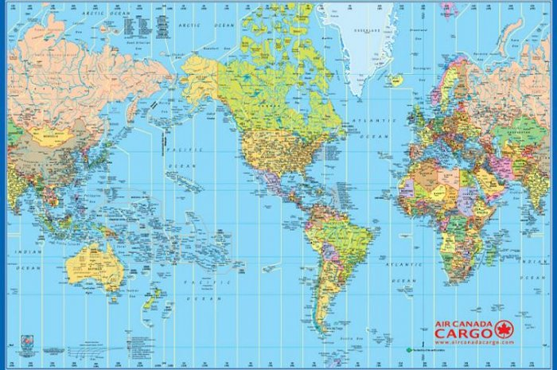
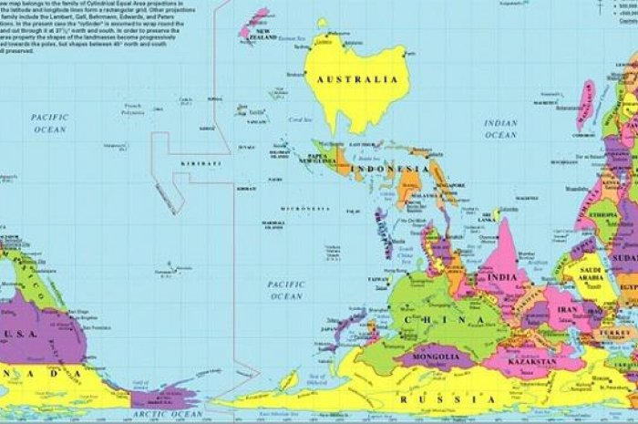
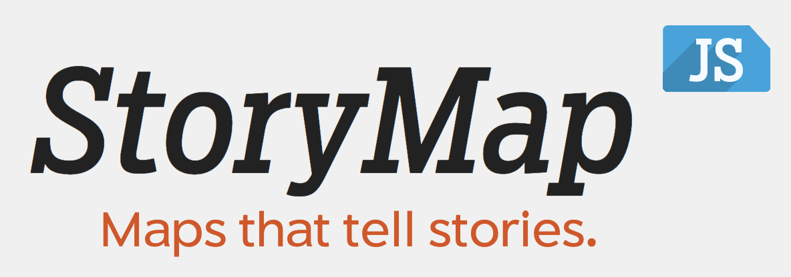

Cartographie subjective numérique
carte : média, outil, message pour la représentation d'un réalité (allégorie, récit, géographie)
Cartographie subjective
Cartographie subjective/objective
- personnel/impersonnel
- proximité/distance
- partial/neutre
Toute carte est une représentation
Choisi ton monde :
1 / 4

Vue de France
2 / 4

Vue des États-Unis
3 / 4

Vue de la Chine
4 / 4

Vue de l'Australie
Représentation d’un espace vécu ou imaginé comme vécu
- principe de narration
- questionner les enjeux de la représentation et les spatialités plurielles
- participation à une culture et un imaginaire
Alternative à la carte conventionnelle
- acteur : spécialiste/amateur
- échelle : distancier/familier
- mode de représentation : images/symboles
Tryptique de la carte subjective :
- sensible
- appropriation
- biographie
Spectre de cartographie subjective :
| documentaireéducatif | patrimoinetoursime | performancecréation | abstraitartistique |
Carte numérique
- quel numérique ?
- la question de la plasticité
- outil ou objet ?
Nouveau paradigme de représentation
- technicité
- accessibilité
- imaginaire de la surveillance
Passage vers une présentation
Documentation en + :
- Brian Harley, 1995, Le pouvoir des cartes, Anthropos, Paris, 1995.
- Christian Jacob, L’Empire des cartes, Albin Michel, Paris, 1992.
- Maurice Merleau-Ponty, L’Œil et l’Esprit, Gallimard, Paris, 1964.
- Fournier M. (dir.), Cartograhier les récits, Clermond Ferrand, PUBP, 2016.
- Site Grrr
- Site Geographie subjective
Atelier
-
sujet : Réaliser une carte du tendre subjective numérique
-
outil : StoryMapJS, outil de narration cartographique
Perspectives :
- adptater/détourner la carte du Tendre à un nouvel espace géographique/sociologique
- actualiser la carte du Tendre à de nouveaux schémas de relation (réseaux sociaux, culture externe)
- s’approprier la carte du Tendre en racontant une histoire fictionnelle/personnelle
Situer - Enrichir - Raconter
Documentation StoryMapJS
StoryMapJS, c’est :
- Outil pour la cartographie narrative
- Outil développé par le KnightLab
- Outil libre et gratuit
Quelques exemples :
Outil pour la narration :
- littéraire/fictionnelle
- sociologique/anthropologique
- historique/documentaire
Comment l’utiliser ?
- compte Google